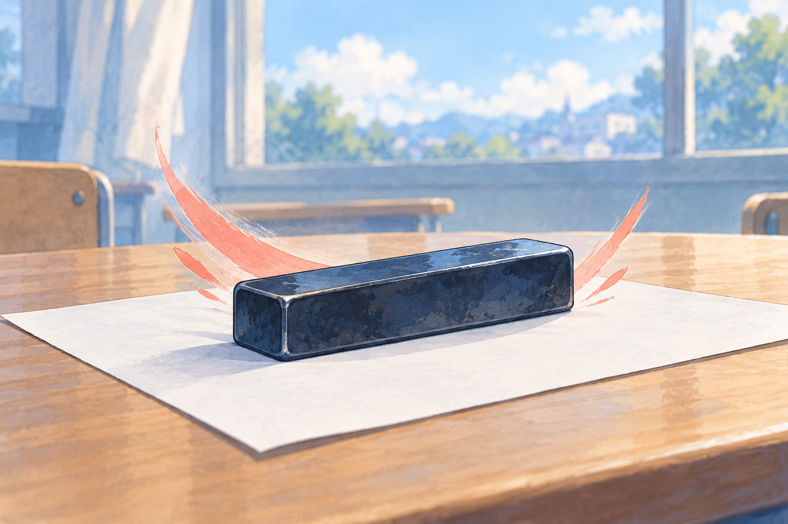

#275 heavy strike 専用絵・実寸監査
通常strikeの鉛筆/破れた紙とは異なる、長方形の文鎮。レアリティ未設定。正式採用前の候補。
v1

暖色背景・不採用候補v2 寒色・優先候補
寒色・優先候補
寒色・優先候補報酬 v2単体14ダメージ
単体14ダメージv1 48px
v2 48pxiPad手札133×180／絵113×57。報酬165×220／絵135×91。効果数値は仮調整値。
通常strikeの鉛筆/破れた紙とは異なる、長方形の文鎮。レアリティ未設定。正式採用前の候補。

暖色背景・不採用候補寒色・優先候補単体14ダメージv2 48pxiPad手札133×180／絵113×57。報酬165×220／絵135×91。効果数値は仮調整値。